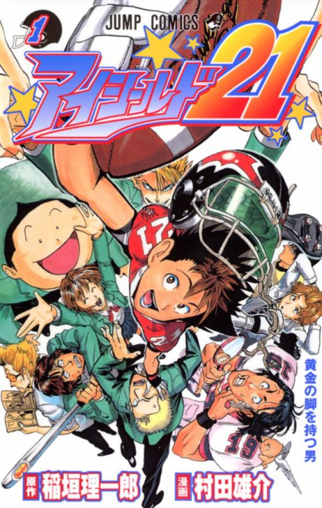

Manga continues fromCh. 241
Anime
Manga continues fromCh. 241
Anime
MangaEyeshield 21
アイシールド21
AniList7.6
Animeter—
Episodes145 ep
MangaCh. 241
Anime finished. Where does the manga pick up?
Start at Chapter241
The anime ends after the Ojo White Knights match (chapter 239; chapter 240 is a short epilogue), so start at chapter 241 (volume 27). The manga is finished at 333 chapters.
1239333 end
Season 1Start reading here